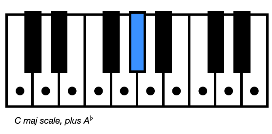
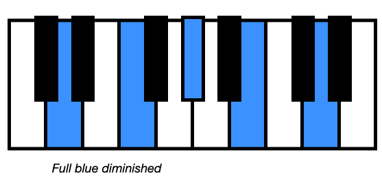
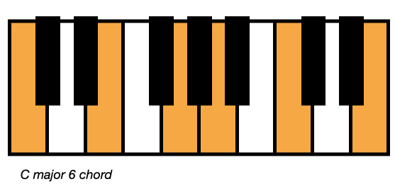
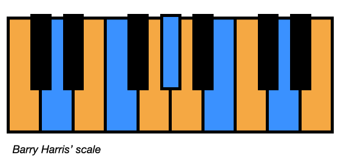
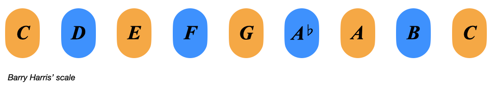
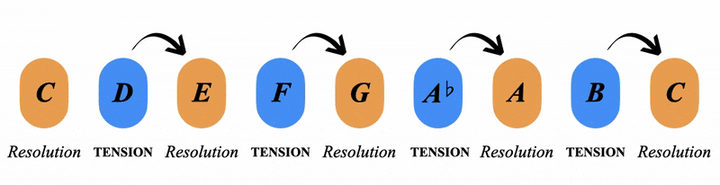
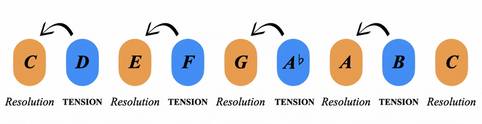
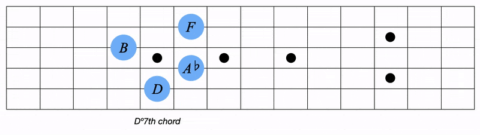
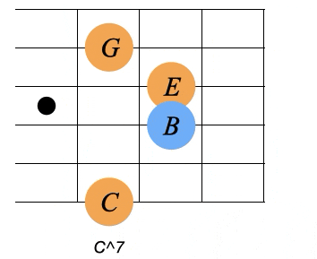
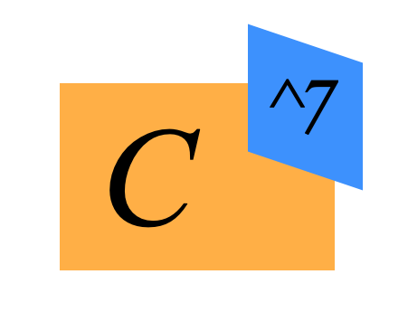

COLOURS:
Welcome to complimentary colours, the beginning of our journey with melody and chord extensions
Learning outcome: Blue resolves to orange (also red to green and yellow to purple)
The phrase 'complimentary colours' comes from the art world and refers to colours that are opporsite on the wheel

They have the highest visual contrast to each other
Imagine a green jumper with a red design on it, the red will really pop out!
But if the design is blue, it will blend with the green jumper
This is because of their closeness/distance on the colour wheel
but how does this relate to harmony?
Essentially,
This manafests in chord movement, melody and chord extensions
Let's unpack:
It all starts with a special scale I learned from the late Barry Harris
Let's start with the C major scale, if we add the extra note of Ab we get something cool
We now have all 4 blue notes existing in our C major scale
The other 4 notes are orange, a C6 chord (we'll discuss this in a later page)
Here's all 4 orange notes and all 4 blue notes
Let's veiw the scale like this to see the alternating nature of the colours:
These orange and blue notes do something really cool:
We get an alternating system of tension and resolution
Each blue note holds tension and resolves up into the next orange note
Explore playing this for yourself
We get the same effect if we descend the scale, can you hear the tense blue notes resolving down to the orange notes?
This gives a way of thinking about melodic tension and resolution
We can also play this as chords, the blue chord can resolve either up or down into the orange chord of C major 6
In this example, we start on Dº7, resolve down to C6, then we go down to Bº7, resolving back up to C6
This demonstrates how the blue chord can sit above or below C major resolveing to it
I would encourage you to take a break here and process what we've discussed
We've covered complementary colours as melodic movement and chord movement
Here's the 3rd point for this page:
for example we think of the C major 7 (C^7) as a resolved orange triad with a tense blue note
can you hear how the ^7th rubs against the chord?
Hear how the ^7 note wants to pull back up to the root note, but we hold it for a beautiful tension
In metaharmony we would write this chord like this:
An orange C major triad with a blue ^7th added to it
We get the same extensions on C minor:
This gives us 4 of the 9 possible extensions you can add to a major or minor triad
What about b7ths for example?
We'll discuss such things in the advanced colour section of the website
complimentary colours provide:
All this is represented in this image below
And all applies the same with purple/yellow and green/red
Back to Functions 2 | Let's Summarise